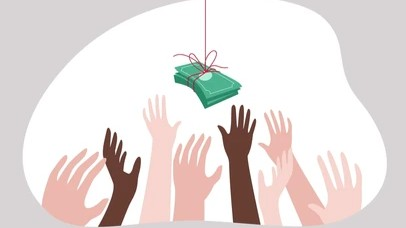

Step 1 of 5
Theme
Scenario title
Scenario text
Make a choice to see the consequences.
In Buddhist thought, attachment (tanha) is not only wanting things. It is also clinging to identity, status, relationships, control, and security. That clinging fuels suffering (dukkha), the unease that appears when life changes and the self tries to hold on.
Drawing on class discussions, David Loy's account of the insecure constructed self, and Peter Harvey's explanation of Buddhist ethics, this interactive journey asks how ordinary choices can deepen attachment or open a path toward freedom.
Suffering is not only pain. It is the deeper dissatisfaction that appears when we cling.
The self is not fixed or permanent. Trying to defend it too tightly creates anxiety.
Mindfulness, generosity, and wiser action loosen the grip of craving and self-protection.
Each character embodies a different kind of attachment that shapes the journey.

Scenario text
Reflection text goes here.
The readings summary will appear here.
This project draws on course lectures, David Loy's account of the insecure constructed self, and Peter Harvey's explanation of wholesome action, virtue, and the reduction of suffering.